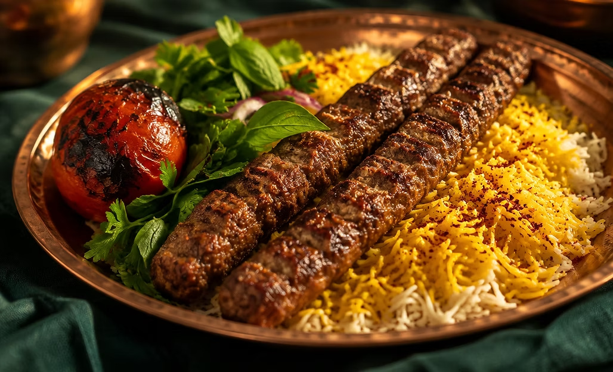
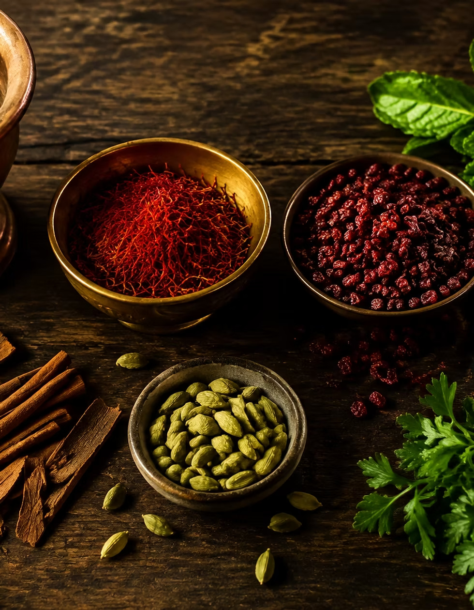

پیشنهاد سرآشپز
کباب کوبیدهٔ باغ
۴۸۵٬۰۰۰ توماندو سیخ کوبیدهٔ گوشت گوسفندی تازه، گوجهٔ کبابی دودی و برنج زعفرانی
از کبابهای زعفرانی روی آتش تا خورشتهایی که آرام و خانگی جا میافتند؛ در باغ ایرانی هر وعده یک مهمانی کوچک است، با نان تازه، سبزی خوردن و چای زعفران.
طاقهای کاشیکاریشده، فانوسهای برنجی و فرشهای دستبافت؛ فضایی که برای ماندن ساخته شده است.
باغ ایرانی از یک آشپزخانهٔ خانگی شروع شد؛ جایی که مادربزرگ ما هر جمعه مهمانها را دور سفره جمع میکرد. امروز همان سفره را با همان وسواس پهن میکنیم: زعفران قائنات، برنج هاشمی دمکشیده و خورشتهایی که ساعتها آرام جا میافتند.
امروز هم تلاش میکنیم همان حس صمیمی سفرههای خانوادگی را زنده نگه داریم؛ از انتخاب مواد اولیه تا لحظهای که غذا با احترام روی میز شما قرار میگیرد. خوشحال میشویم میزبان دورهمیها و لحظههای بهیادماندنی شما باشیم.
سبزی و صیفی هر روز صبح از بازار میدان میرسد؛ گوشت تازه و بدون فریزر.
کبابها روی زغال چوب و با دست پخته میشوند، نه روی گریل برقی.
همان دستورهایی که سه نسل در آشپزخانهٔ خانوادهٔ ما تکرار شدهاند.

۱۴۰۳
برندهٔ جایزهٔ آشپزی ایرانی
دیدگاهها را با فلشها مرور کنید.
فضای گرم و آرام، در کنار عطر غذای ایرانی، تجربهای دلنشین برای یک دورهمی خانوادگی میسازد.متن نمونه؛ پیش از انتشار با نظر واقعی مهمانان جایگزین شود.
تاریخ و ساعت را انتخاب کنید؛ رزرو شما ثبت میشود و برای تأیید نهایی با شما تماس میگیریم.